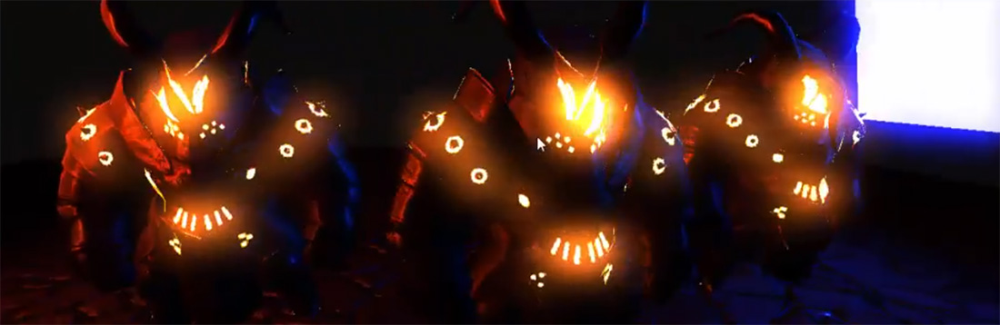
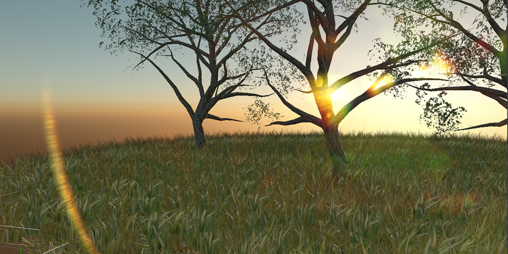

Bloom, Dirt, Light Shaft and Lens Flare
These four effects share the same first steps: the image is downsampled and its brightest areas are extracted and blurred. They are computed together and combined in one node, so they are grouped under Bloom in the default graph. Dirt, light shafts and lens flare only appear when bloom is enabled.
Bloom

Bloom spreads light from bright areas into their surroundings, the glow a real lens and eye produce around intense light. It works best with HDR rendering, where bright pixels can go well above 1.
| Parameter | Default | Description |
|---|---|---|
| Enabled | On | Turns bloom and the effects below on. |
| Threshold | 2 | Luminance above which pixels bloom. With HDR, values above 1 keep ordinary surfaces from glowing. |
| Color Intensity | 1 | Brightness of the original image in the blend, from 0 to 1. |
| Intensity | 1 | Brightness of the bloom in the blend, from 0 to 1. |
Dirt
Dirt simulates a dirty lens: smudges and dust that light up where bright light passes through them.
| Parameter | Default | Description |
|---|---|---|
| Enabled | On | Turns the effect on. |
| Texture | LensDirt00 of Evergine.Core |
Texture with the dirt pattern. |
| Intensity | 0.5 | Strength of the dirt, from 0 to 1. |
Light Shaft
Light shafts, also called god rays, are beams of light streaming from a bright sky past the objects in front of it.
| Parameter | Default | Description |
|---|---|---|
| Enabled | Off | Turns the effect on. |
| Min. Threshold | 0.1 | Lowest luminance of the sky that produces shafts. |
| Max. Threshold | 0.4 | Luminance at which shafts reach full strength. |
| Scale | 0.05 | Length of the shafts. |
| Intensity | 1 | Strength of the shafts, from 0 to 1. |
Lens Flare

A lens flare is the set of ghosts and halos light produces as it bounces between the elements of a camera lens.
| Parameter | Default | Description |
|---|---|---|
| Enabled | Off | Turns the effect on. |
| Ghost Count | 8 | Number of ghost images, from 0 to 32. |
| Ghost Spacing | 0.3 | Distance between ghosts. |
| Ghost Threshold | 12 | Luminance above which pixels produce ghosts. |
| Ghost Chro. Aberration | 0.002 | Color separation of the ghosts. |
| Halo Radius | 0.5 | Radius of the halo ring. |
| Halo Thickness | 0.05 | Thickness of the halo ring. |
| Halo Threshold | 20 | Luminance above which pixels produce the halo. |
| Halo Chro. Aberration | 0.002 | Color separation of the halo. |
| Intensity | 1 | Strength of the flare, from 0 to 1. |